איך לקרוא כל כרטיס
- מתחילים כש: השורה הצהובה. ״הבית״ הוא הבית של הצליל משיעור 1.
- הסימנים: ✋החזק 👆לחץ ⟳סובב 🖐שחרר.
- לפני כל כרטיס: הלוח, עם מספרים על מה שנוגעים בו. כל כרטיס נגמר בחזרה לבית.
הקרייב הוא קול אחד שעובר דרך ארבע תחנות. כאן עוברים תחנה אחרי תחנה: כל כפתור, מה הוא עושה, ומה לנסות. בלי סיקוונסר, רק קליד אחד ואוזניים.
צליל בסינתי הוא כמו מים שזורמים בצינור. המתנד יוצר אותם, המסנן מצר את הצינור, המעטפת פותחת וסוגרת את הברז בכל תו, והמגבר קובע כמה יוצא החוצה. בקרייב כל התחנות כבר מחוברות מבפנים, ולכן הוא מנגן בלי כבל אחד. הכבלים, בשיעור 4, רק משנים את הדרך.
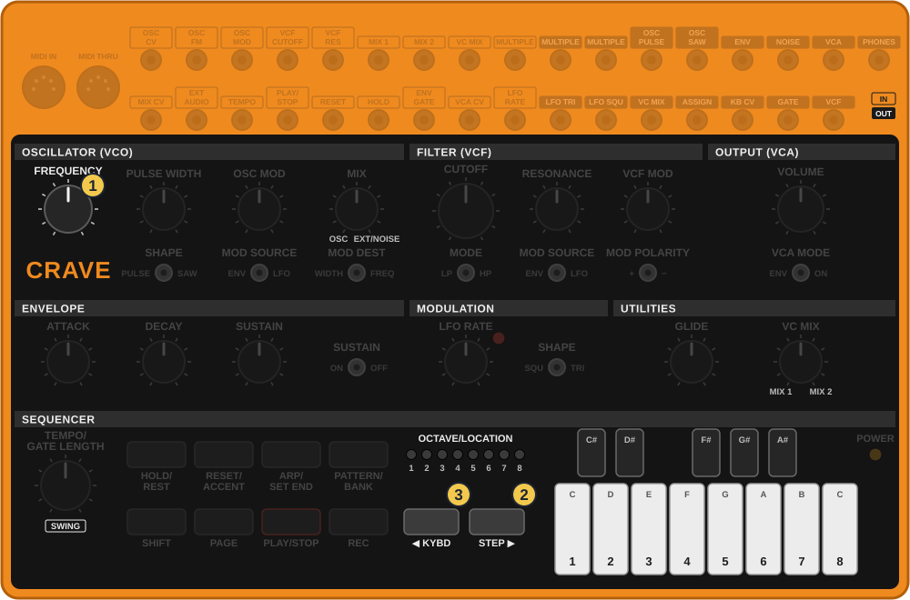
תרשים מצויר לפי צילום של הקרייב והמדריך הרשמי, לא צילום
אפשר לגעת בתמונה כדי להגדיל.
FREQUENCY הוא הכוונון של כל הכלי. אם הקרייב נשמע מזויף מול כלי אחר, זה הכפתור שמכוונן.
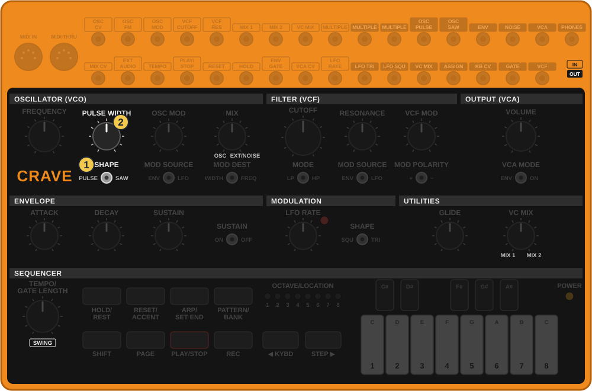
תרשים מצויר לפי צילום של הקרייב והמדריך הרשמי, לא צילום
אפשר לגעת בתמונה כדי להגדיל.
גל מסור מלא בצלילים עיליים, ולכן יש בו הרבה מה לפסל במסנן. זה הגל של רוב קווי האסיד והטרנס. PULSE WIDTH עובד רק על PULSE.
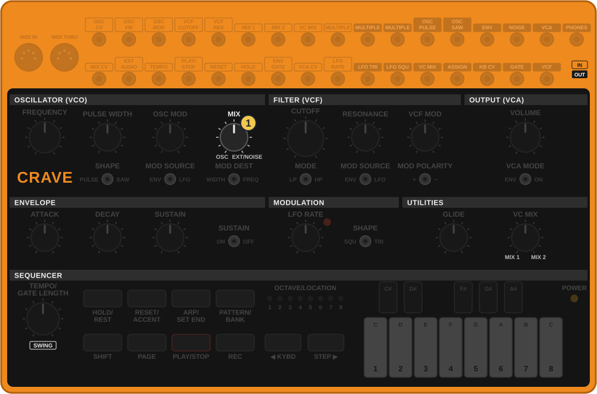
תרשים מצויר לפי צילום של הקרייב והמדריך הרשמי, לא צילום
אפשר לגעת בתמונה כדי להגדיל.
רעש עם תו קצר נותן משב או היי־האט. כשמחברים כבל לשקע EXT AUDIO, הצליל החיצוני נכנס במקום הרעש, ועובר במסנן של הקרייב.
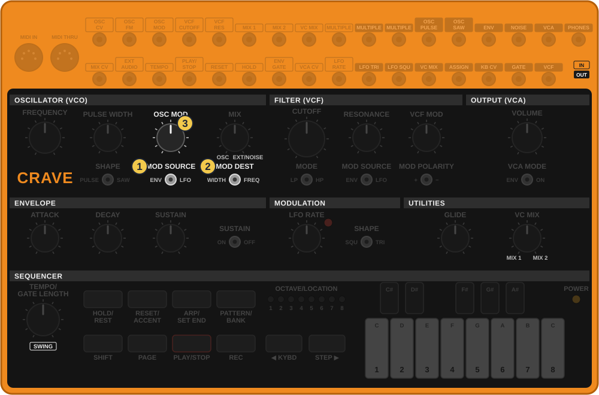
תרשים מצויר לפי צילום של הקרייב והמדריך הרשמי, לא צילום
אפשר לגעת בתמונה כדי להגדיל.
זה הרעיון של מודולציה: כפתור שמישהו אחר מסובב בשבילך. OSC MOD קובע כמה. MOD SOURCE (VCO) קובע מי מסובב: המעטפת או ה־LFO. MOD DEST קובע מה זז: הגובה, או רוחב הפולס.
הצליל של אסיד הוא מסנן שנפתח ונסגר, עם שריקה גבוהה. בקרייב יש מסנן ״סולם״ בסגנון מוג: עבה ושמן. אלה הכפתורים שתסובב הכי הרבה בג׳אם.
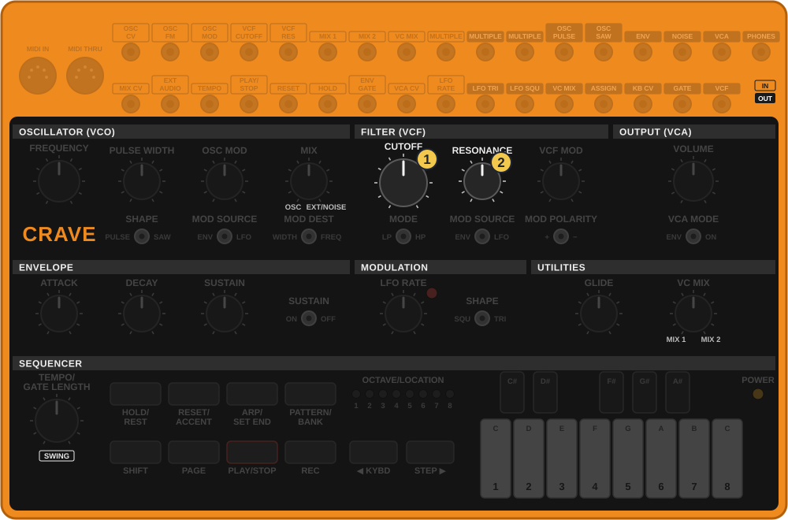
תרשים מצויר לפי צילום של הקרייב והמדריך הרשמי, לא צילום
אפשר לגעת בתמונה כדי להגדיל.
קרוב לסוף, RESONANCE שורק בעצמו, ובחוזקה. כשמנסים, VOLUME נמוך.
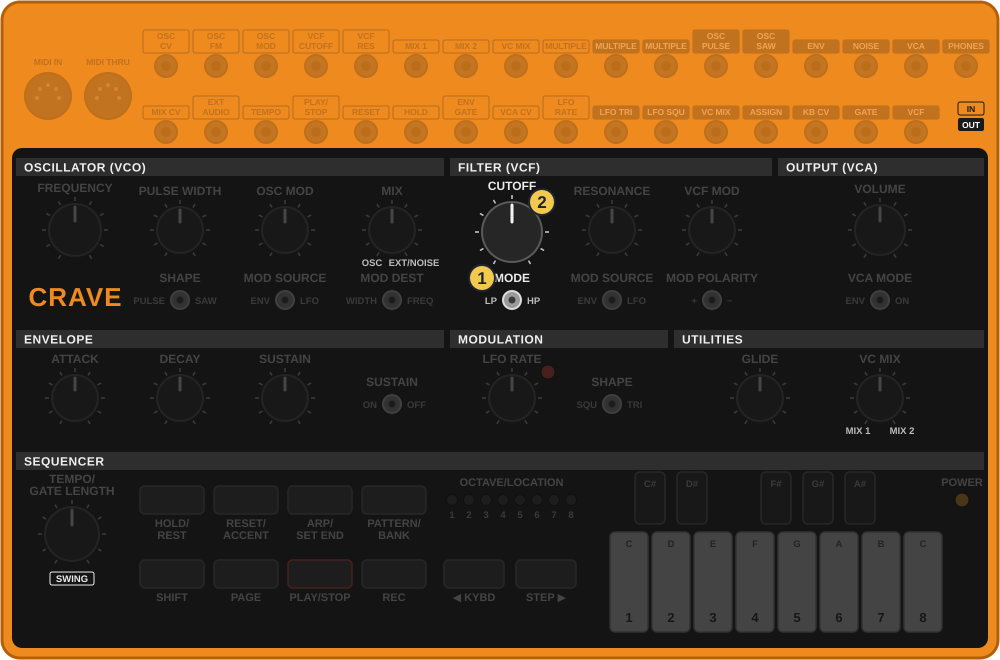
תרשים מצויר לפי צילום של הקרייב והמדריך הרשמי, לא צילום
אפשר לגעת בתמונה כדי להגדיל.
LP הוא הבית של בס ואסיד. HP שימושי כשבס אחר כבר מנגן למטה, או עם רעש, כדי לקבל היי־האט.
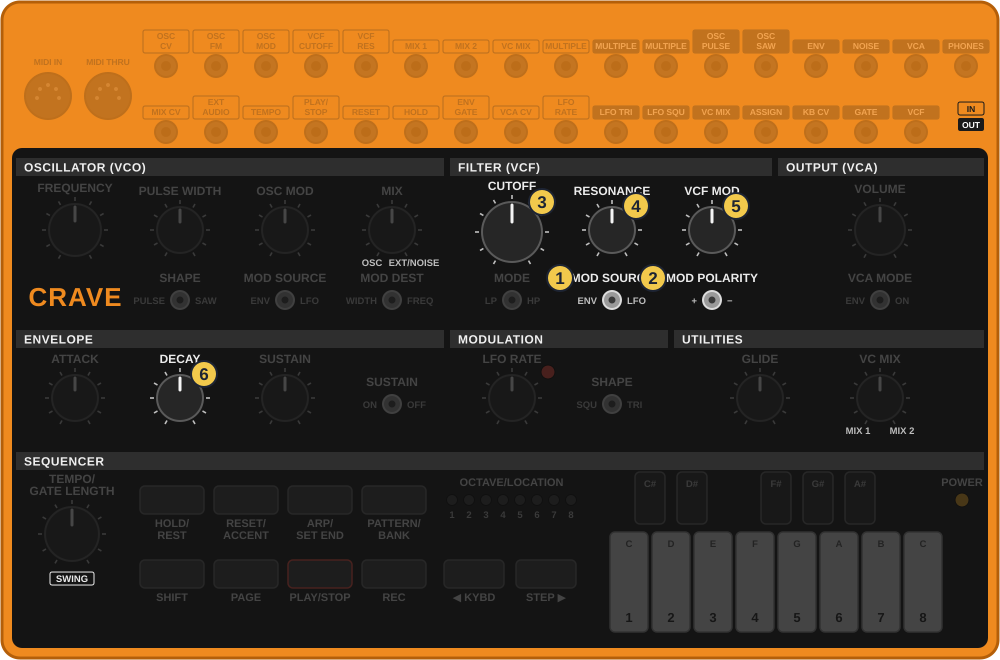
תרשים מצויר לפי צילום של הקרייב והמדריך הרשמי, לא צילום
אפשר לגעת בתמונה כדי להגדיל.
את הצליל הזה שווה לצלם: הוא הצליל של שיעור 3. ממנו חוזרים לבית: CUTOFF לשעה 12, RESONANCE ו־VCF MOD לאפס, DECAY לשעה 12.
אותה מעטפת מגיעה לשלוש תחנות: למגבר תמיד, ולמסנן ולמתנד רק כמה שהכפתורים מאפשרים. VCF MOD קובע כמה ממנה מגיע למסנן, ו־OSC MOD קובע כמה מגיע למתנד.
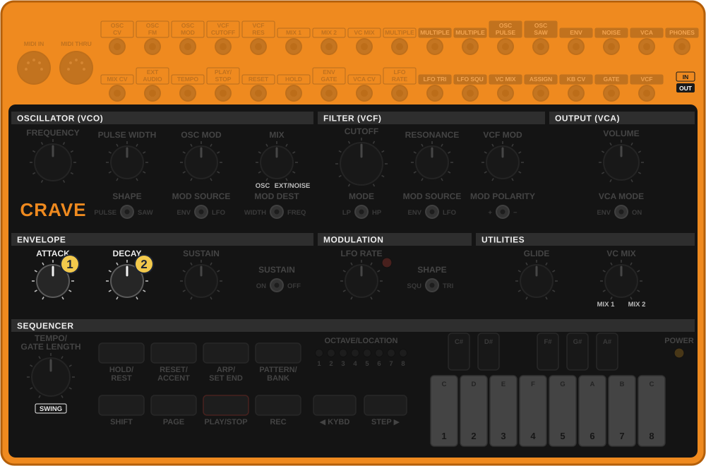
תרשים מצויר לפי צילום של הקרייב והמדריך הרשמי, לא צילום
אפשר לגעת בתמונה כדי להגדיל.
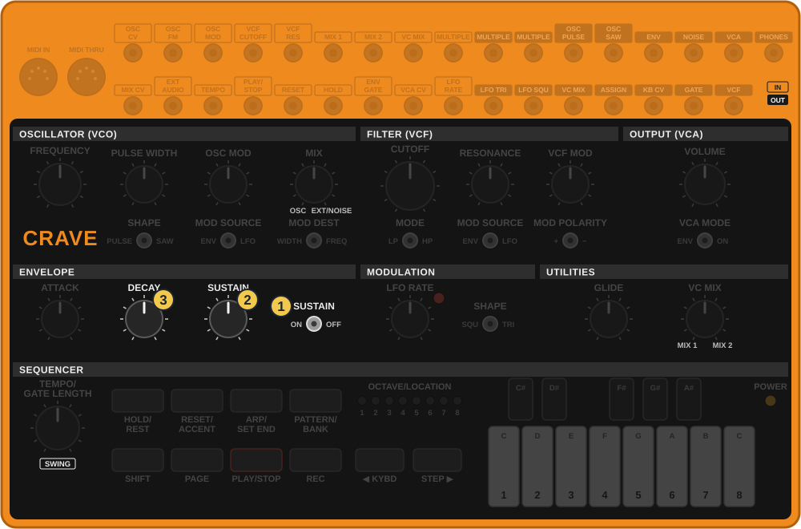
תרשים מצויר לפי צילום של הקרייב והמדריך הרשמי, לא צילום
אפשר לגעת בתמונה כדי להגדיל.
המתג קובע אם יש החזקה. הכפתור קובע באיזו עוצמה מחזיקים. בקווי אסיד מהירים בדרך כלל OFF, כי את האורך קובע הסיקוונסר.
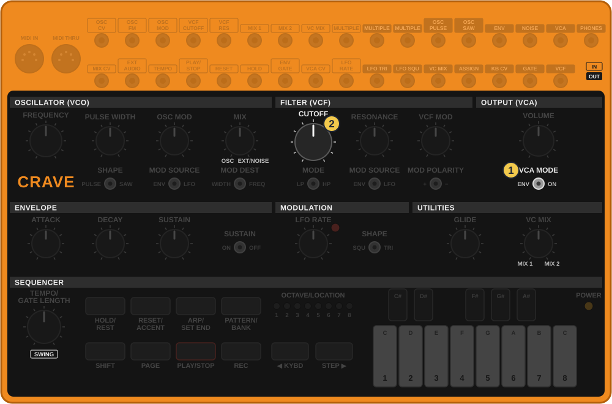
תרשים מצויר לפי צילום של הקרייב והמדריך הרשמי, לא צילום
אפשר לגעת בתמונה כדי להגדיל.
כשהקרייב מזמזם ולא מפסיק, זה המתג הזה. זה הדבר הראשון לבדוק.
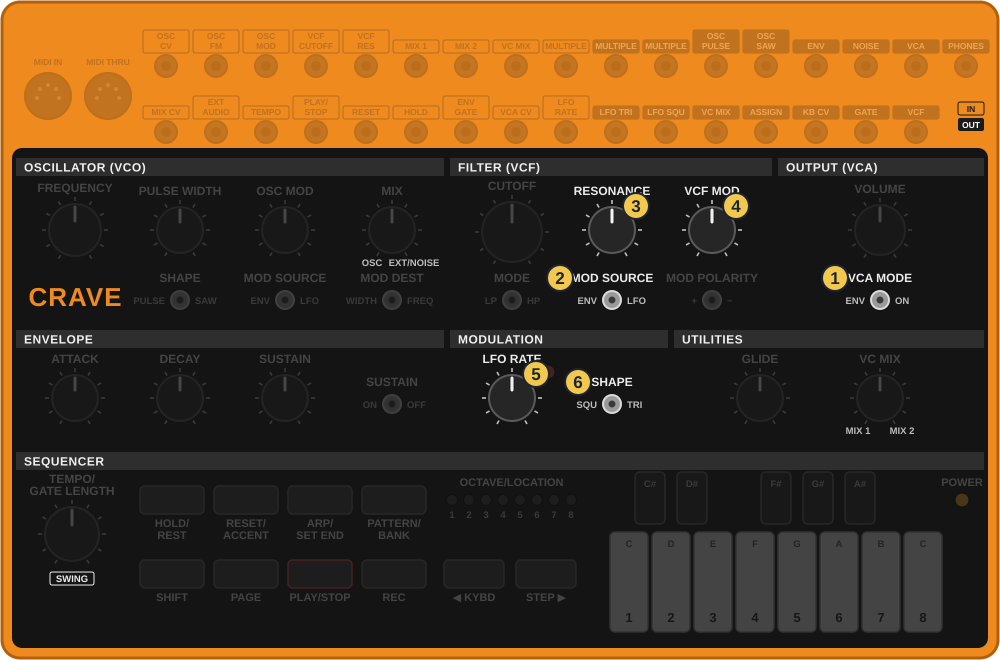
תרשים מצויר לפי צילום של הקרייב והמדריך הרשמי, לא צילום
אפשר לגעת בתמונה כדי להגדיל.
ל־LFO אין צליל משלו. הוא גל איטי שמזיז כפתורים, למסנן או למתנד, לפי מתג MOD SOURCE של כל אחד מהם. רוצה שהמעטפת וה־LFO יזיזו את המסנן באותו זמן? זה בכבל, בשיעור 4.
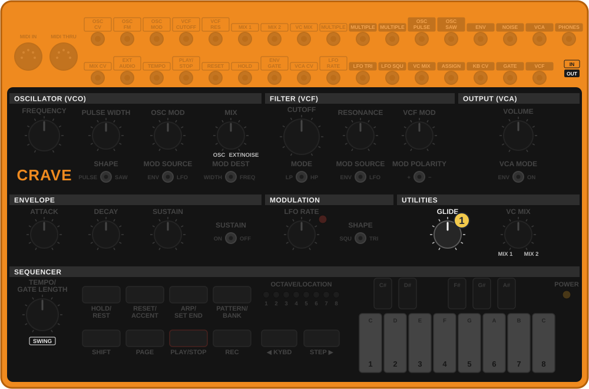
תרשים מצויר לפי צילום של הקרייב והמדריך הרשמי, לא צילום
אפשר לגעת בתמונה כדי להגדיל.
כאן הגלישה היא על כל התווים. בסיקוונסר אפשר לתת גלישה רק לצעדים מסוימים, כמו הסלייד של 303. זה בשיעור 3.
כל הכפתורים והמתגים של הצליל, לפי התחנה. הסיקוונסר בשיעור 3, והשקעים בשיעור 4.
| כפתור | מה הוא עושה |
|---|---|
| מתנד | |
| FREQUENCY | גובה וכוונון, עד אוקטבה לכל צד. |
| SHAPE (VCO) | מתג: PULSE או SAW. |
| PULSE WIDTH | ב־PULSE: מדק, דרך ריבוע באמצע, לרחב. |
| OSC MOD | כמה המתנד זז מהמעטפת או מה־LFO. |
| MOD SOURCE (VCO) | מתג: מי מזיז את המתנד, ENV או LFO. |
| MOD DEST | מתג: מה זז, WIDTH או FREQ. |
| MIX | שמאל מתנד, ימין רעש (או צליל מ־EXT AUDIO). |
| מסנן | |
| CUTOFF | כמה המסנן פתוח. |
| RESONANCE | שריקה סביב נקודת החיתוך. |
| MODE | מתג: LP חותך גבוהים, HP חותך נמוכים. |
| VCF MOD | כמה המסנן זז מהמעטפת או מה־LFO. |
| MOD SOURCE (VCF) | מתג: מי מזיז את המסנן, ENV או LFO. |
| MOD POLARITY | מתג: פותח (+) או סוגר (−). |
| מגבר | |
| VOLUME | עוצמה ליציאה הראשית ולאוזניות. |
| VCA MODE | מתג: ENV, או ON לצליל שלא נגמר. |
| מעטפת | |
| ATTACK | כמה מהר התו נכנס. |
| DECAY | כמה מהר הוא נופל. |
| SUSTAIN | באיזו עוצמה מחזיקים, כשהמתג על ON. |
| SUSTAIN ON/OFF | מתג: ON מחזיק כל עוד לוחצים, OFF נופל מיד. |
| תנועה ועזרים | |
| LFO RATE | מהירות הגל האיטי. הנורית מהבהבת לפיו. |
| SHAPE (LFO) | מתג: SQU קופץ, TRI חלק. |
| GLIDE | גלישה בין תווים. עם SHIFT: חזרות מהירות בסיקוונסר. |
| VC MIX | מערבב בין שני כבלים. בלי כבלים לא עושה כלום. |